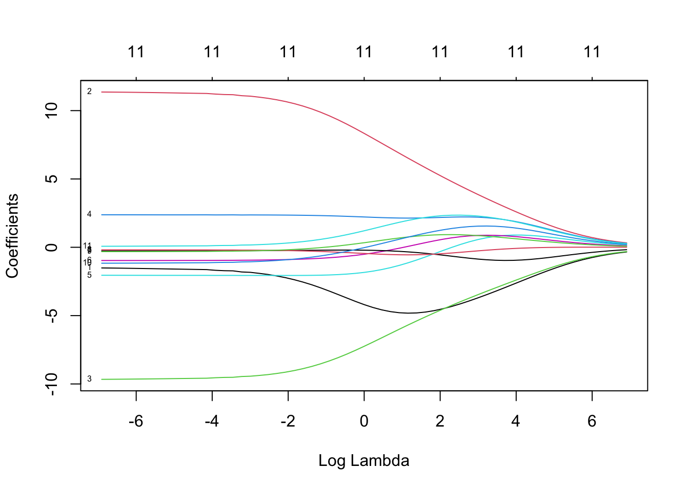

Chapter 8 Advanced Regression Methods
8.1 Weighted Least Squares Regression
Recall from Example 8.1 where we attempted to predict ERA in 2022 from ERA and FIP from 2021. One concern in this analysis was that each pitcher pitched a different number of innings. We’d like to account for this by giving more weight to pitchers with more innings pitched. This can be accomplished by using weighted least squares regression. Weighted least squares regression is particularly used when the data exhibits non-constant variance
Example 8.1 Build SLR models predicting ERA22 from ERA21 with and without weights.
# Download individual pitching data for 2021 and 2022 seasons
library(tidyverse)
library(broom)
library(baseballr)
pit21 <- bref_daily_pitcher("2021-01-01", "2021-12-31") %>%
fip_plus() %>%
dplyr::select(Name, IP, ERA, FIP) %>%
dplyr::arrange(dplyr::desc(IP)) %>%
mutate(IP21=IP,ERA21=ERA,FIP21=FIP)
pit22 <- bref_daily_pitcher("2022-01-01", "2022-12-31") %>%
fip_plus() %>%
dplyr::select(Name, IP, ERA, FIP) %>%
dplyr::arrange(dplyr::desc(IP)) %>%
mutate(IP22=IP,ERA22=ERA,FIP22=FIP)
# merge the datasets together, remove redundant columns
all_pit <- pit21 %>%
left_join(pit22,by = "Name") %>%
select(-c(2:4,8:10)) %>%
filter(IP21>5 & IP22 > 5)
# merge the datasets together, remove redundant columns
all_pit_min0 <- pit21 %>% left_join(pit22,by = "Name") %>%
select(-c(2:4,8:10)) %>% filter(IP21>0 & IP22>0)
all_pit_min5 <- pit21 %>% left_join(pit22,by = "Name") %>%
select(-c(2:4,8:10)) %>% filter(IP21>5 & IP22>5)all_pit %>% ggplot(aes(x=ERA21,y=ERA22,size=IP21+IP22)) + geom_point(alpha=0.2,color="blue") +
scale_size(range = c(0,5))
mod_slr <- lm(ERA22~ERA21,data=all_pit_min0)
mod_wls <- lm(ERA22~ERA21,data=all_pit_min0,weights = IP21)| Predictor | Estimate | Std Error | t stat | p-value |
|---|---|---|---|---|
| Intercept | 4.474 | 0.248 | 18.007 | <0.001 |
| Earned Run Average, 2021 | 0.024 | 0.044 | 0.548 | 0.584 |
| Predictor | Estimate | Std Error | t stat | p-value |
|---|---|---|---|---|
| Intercept | 2.987 | 0.314 | 9.525 | <0.001 |
| Earned Run Average, 2021 | 0.308 | 0.073 | 4.229 | <0.001 |
mod_slr <- lm(ERA22~ERA21,data=all_pit_min5)
mod_wls <- lm(ERA22~ERA21,data=all_pit_min5,weights = IP21)| Predictor | Estimate | Std Error | t stat | p-value |
|---|---|---|---|---|
| Intercept | 3.725 | 0.230 | 16.193 | <0.001 |
| Earned Run Average, 2021 | 0.130 | 0.049 | 2.662 | 0.008 |
| Predictor | Estimate | Std Error | t stat | p-value |
|---|---|---|---|---|
| Intercept | 3.064 | 0.267 | 11.477 | <0.001 |
| Earned Run Average, 2021 | 0.267 | 0.063 | 4.234 | <0.001 |
8.2 Stepwise Regression using Cross-Validation
Cross-validation is a resampling method that uses different portions of the data to train and test models. It is often used when we aim to do prediction.
Example 8.2 Using the 2022 MLB team statistics data, use cross-validation to determine a linear model with runs/game as the response and BA, OBP, SLG, and OPS as predictors. Use 10-fold cross-validation with 3 repeats.
# Acquire the data
library(rvest)
url <- "https://www.baseball-reference.com/leagues/majors/2022.shtml"
site <- read_html(url)
mlb22 <- site %>% html_elements("#teams_standard_batting") %>% html_table()
mlb22 <- mlb22 %>% data.frame() %>% column_to_rownames("Tm") %>%
rename(`R/G`=R.G) %>% slice(-(31:33)) %>% select(`R/G`,BA,OBP,SLG,OPS)
mlb22 <- write_csv(mlb22,"data/mlb22.csv")mlb22 <- read_csv("data/mlb22.csv")
set.seed(2023)
library(caret)
mod_null <- lm(`R/G` ~ 1, data=mlb22)
mod_full <- lm(`R/G` ~ ., data=mlb22)
set_train <- trainControl(method="repeatedcv", number=10, repeats=3)
mod_cv <- train(`R/G` ~ ., data=mlb22, scope = formula(mod_null),
method="lmStepAIC", direction="both", trace=FALSE, trControl=set_train)## (Intercept)
## 4.284## (Intercept) BA OBP SLG OPS
## -4.054414 -4.481930 66.032434 61.003985 -49.862273## (Intercept) BA OBP SLG
## -3.982217 -6.311483 17.489115 11.0306948.3 Ridge Regression
Ridge regression is a method for estimating coefficients of a multiple regression model and used particularly used when predictor variables are highly correlated.
In particular, model estimates of \(\hat{\beta}_i\) are calculated to minimize:
\(\sum_{i=1}^n (y_i - \beta_0 - \sum_{j=1}^p \beta_j x_{ij})^2 + \lambda \sum_{j=1}^p \beta_j^2\)
Example 8.3 NHL team statistics for the 2021-2022 season is contained in nhl21-22.csv. The goal is to build a ridge regression model with team points as the response and other team statistics as the predictors.
- Load the data and display in a kable table.
# Load data and output a subset of the table
nhl2122 <- read_csv("data/nhl21-22.csv")
nhl2122$Team <- gsub("\\*", "",nhl2122$Team)
nhl2122 %>% select(1:10) %>% slice(1:10) %>% kable(booktabs=T)| Team | PTS | SOS | GF/G | GA/G | PP% | PK% | SH | SHA | PIM/G |
|---|---|---|---|---|---|---|---|---|---|
| Florida Panthers | 122 | -0.08 | 4.11 | 2.95 | 24.43 | 79.54 | 12 | 8 | 10.1 |
| Colorado Avalanche | 119 | -0.04 | 3.76 | 2.83 | 24.01 | 79.66 | 6 | 5 | 9.0 |
| Carolina Hurricanes | 116 | -0.05 | 3.38 | 2.44 | 21.98 | 88.04 | 4 | 3 | 9.2 |
| Toronto Maple Leafs | 115 | -0.06 | 3.80 | 3.07 | 27.27 | 82.05 | 13 | 4 | 8.6 |
| Minnesota Wild | 113 | -0.02 | 3.72 | 3.04 | 20.54 | 76.14 | 2 | 5 | 10.8 |
| Calgary Flames | 111 | -0.05 | 3.55 | 2.51 | 22.88 | 83.20 | 7 | 3 | 9.1 |
| Tampa Bay Lightning | 110 | -0.02 | 3.48 | 2.78 | 23.94 | 80.56 | 7 | 5 | 11.0 |
| New York Rangers | 110 | -0.03 | 3.05 | 2.49 | 25.23 | 82.30 | 8 | 2 | 8.2 |
| St. Louis Blues | 109 | -0.05 | 3.77 | 2.91 | 26.97 | 84.09 | 9 | 5 | 7.5 |
| Boston Bruins | 107 | -0.05 | 3.09 | 2.66 | 21.19 | 81.30 | 5 | 6 | 9.9 |
- Fit the optimal value for lambda.
library(glmnet)
set.seed(2023)
y <- nhl2122$PTS
x <- nhl2122 %>% select(-Team,-PTS) %>% scale() %>% data.matrix()
lambdas <- 10^seq(3, -3, by = -.1)
# fit the ridge regression model
model <- glmnet(x, y, alpha = 0, lambda = lambdas)
# fit the ridge regression model using cross-validation
cv_model <- cv.glmnet(x, y, alpha = 0, lambda = lambdas)
( best_lambda <- cv_model$lambda.min )## [1] 1.584893- Plot MSE as a function of log(lambda).

- Create a trace plot.
# Trace plot
# Note that coefficients shrink to zero as lambda gets large
# When lambda is small, we get ordinary least squares regression
plot(model,xvar="lambda",label = T) 
- Find the final ridge regression model.
# Use optimal lambda to find final ridge regression model
best_model <- glmnet(x, y, alpha = 0, lambda = best_lambda)
coef(best_model)## 12 x 1 sparse Matrix of class "dgCMatrix"
## s0
## (Intercept) 91.0000000
## SOS -4.5830640
## GF/G 7.6021591
## GA/G -6.6140452
## PP% 2.1545416
## PK% -1.6310942
## SH -0.3088951
## SHA -0.2400908
## PIM/G -0.5156325
## oPIM/G 0.5151495
## S% 0.2863092
## SV% 1.53973938.4 Lasso Regression
Lasso regression is a method for estimating coefficients of a multiple regression model and is especially useful for variable selection.
In particular, model estimates of \(\hat{\beta}_i\) are calculated to minimize:
\(\sum_{i=1}^n (y_i - \beta_0 - \sum_{j=1}^p \beta_j x_{ij})^2 + \lambda \sum_{j=1}^p |\beta_j|\)
Example 8.4 Use the NHL 2021-2022 team statistics dataset to fit a regression model using LASSO.
- Fit the optimal value for lambda.
set.seed(2023)
y <- nhl2122$PTS
x <- nhl2122 %>% select(-Team,-PTS) %>% scale() %>% data.matrix()
lambdas <- 10^seq(2, -2, by = -.1)
# fit the ridge regression model
model <- glmnet(x, y, alpha = 1, lambda = lambdas)
# fit the ridge regression model using cross-validation
cv_model <- cv.glmnet(x, y, alpha = 1, lambda = lambdas)
( best_lambda <- cv_model$lambda.min )## [1] 1- Plot MSE as a function of log(lambda).

- Create a trace plot.
# Trace plot
# Note that coefficients shrink to zero as lambda gets large
# When lambda is small, we get ordinary least squares regression
plot(model,xvar="lambda",label = T) 
- Find the final lasso regression model.
# Use optimal lambda to find final lasso regression model
lasso_model <- glmnet(x, y, alpha = 1, lambda = best_lambda)
coef(lasso_model)## 12 x 1 sparse Matrix of class "dgCMatrix"
## s0
## (Intercept) 91.0000000
## SOS -0.7500131
## GF/G 10.0306214
## GA/G -9.1194278
## PP% 1.2783637
## PK% .
## SH .
## SHA .
## PIM/G .
## oPIM/G .
## S% .
## SV% .8.5 Elastic Net
Elastic Net Regularization is a method for estimating coefficients of a multiple regression model by combining Ridge and LASSO Regression
In particular, model estimates of \(\hat{\beta}_i\) are calculated to minimize:
\(\sum_{i=1}^n (y_i - \beta_0 - \sum_{j=1}^p \beta_j x_{ij})^2 + \lambda \cdot \left( \alpha \cdot \sum_{j=1}^p |\beta_j| + \frac{1-\alpha}{2} \sum_{j=1}^p \beta_j^2 \right)\)
Example 8.5 Use the NHL 2021-2022 team statistics dataset to fit a regression model using Elastic Net and cross-validation.
- First tune the model parameters, \(\alpha\) and \(\lambda\).
set.seed(2023)
library(caret)
cv5 = trainControl(method = "cv", number = 5)
elnet = train(PTS~.-Team,data=nhl2122,
metric = "RMSE",
preProcess = c("center", "scale"),
tuneGrid = expand.grid(
.alpha = seq(0, 1, length.out = 10),
.lambda = seq(0, 5, length.out = 101)),
method = "glmnet", trControl = cv5)
elnet$bestTune## alpha lambda
## 931 1 1.05- Find the final model after tuning.
elastic_mod <- glmnet(x, y, alpha = elnet$bestTune$alpha, lambda = elnet$bestTune$lambda)
coef(elastic_mod)## 12 x 1 sparse Matrix of class "dgCMatrix"
## s0
## (Intercept) 91.0000000
## SOS -0.7821577
## GF/G 9.9863842
## GA/G -9.0747940
## PP% 1.2652996
## PK% .
## SH .
## SHA .
## PIM/G .
## oPIM/G .
## S% .
## SV% .8.6 Mixed Effects Models
Mixed effects regression models allow us to model model predictor variables as fixed or random factors.
The term factor refers to a variable that is thought to influence the outcome of an experiment. A factor has levels, which refer the the specific values of that factor. For example, team might be a factor with 32 levels, one for each team.
the specific factors that were used in the experiment, and their levels, are of direct interest to the researcher. Conclusions of the analysis apply to the factors and the specific factor levels tested. Example: Are the basketball predictive of team winning percentage?
the levels of a random factor represent a random sample from a larger population of possible levels. Example: How much variability in win percentage is explained by team? Say there are 32 possible teams of data (levels), and we would like to account for the variability associated with team, however, we aren’t interested in estimating the effect of team, just the variability associated with team.
The term effect refers to a variable’s coefficient, or in some cases, the difference between two coefficients.
effects or coefficients associated with fixed factors (these effects are of direct interest)
effects or coefficients associated with random factors (these effects are NOT of direct interest; the variation among effects is of interest)
For more information about the Four Factors, see:
https://www.basketball-reference.com/about/factors.html
The following video playlist also discusses advanced basketball analytics:
https://www.youtube.com/playlist?list=PLtzZl14BrKjTJZdubjNEY5jU0fGOiy51x
Example 8.6 In this exercise, we will assess the relationship between the Four Factors and Win Percentage in professional basketball using team statistics from 2000-2022.
- Scrape advanced team statistics from Basketball Reference for the years 2000-2022. We are interested in the following variables: Team, Four Factors, Season.
url_base <- "https://www.basketball-reference.com/leagues/NBA_"
year = 2000:2022
n_year = length(year)
url_end <- ".html"
library(rvest)
nba_team_data <- NULL
for(i in 1:n_year){
url <- paste(url_base,year[i],url_end,sep = "")
site <- read_html(url)
temp_table <- site %>% html_element("#advanced-team") %>% html_table() %>% data.frame()
names(temp_table) <- as.character(temp_table[1,])
temp_table <- temp_table[-1,] %>%
select(1:22) %>%
filter(Team != "League Average") %>%
mutate(Team = gsub("\\*", "", Team))
teams <- temp_table %>% select(Team) %>% slice(1:30)
temp_table[,3:22] <- temp_table %>% select(3:22) %>%
mutate_if(is.character, as.numeric)
temp_table <- temp_table %>%
mutate(WinPct = W/(W+L)) %>%
select(Team,`WinPct`,`eFG%`,`TOV%`,`ORB%`,`FT/FGA`) %>%
mutate(Season=year[i])
nba_team_data <- rbind(nba_team_data,temp_table)
}
nba_team_data <- nba_team_data %>% as.data.frame()| Team | WinPct | eFG% | TOV% | ORB% | FT/FGA | Season |
|---|---|---|---|---|---|---|
| Los Angeles Lakers | 0.817 | 0.484 | 12.7 | 30.6 | 0.241 | 2000 |
| Portland Trail Blazers | 0.720 | 0.501 | 14.5 | 30.3 | 0.240 | 2000 |
| San Antonio Spurs | 0.646 | 0.488 | 14.3 | 27.8 | 0.258 | 2000 |
| Phoenix Suns | 0.646 | 0.491 | 15.2 | 29.3 | 0.217 | 2000 |
| Utah Jazz | 0.671 | 0.490 | 14.3 | 29.5 | 0.260 | 2000 |
- Inspect the correlational structure of the dataset

- Fit a mixed effects model with team modeled as a random effect and the four factors as fixed effects.
library(lme4)
nba_team_data_scaled <- nba_team_data %>% mutate_if(is.numeric,scale)
nba_model <- lmer(WinPct~(1|Team)+`eFG%`+`TOV%`+`ORB%`+`FT/FGA`,
data=nba_team_data_scaled)
summary(nba_model)## Linear mixed model fit by REML ['lmerMod']
## Formula: WinPct ~ (1 | Team) + `eFG%` + `TOV%` + `ORB%` + `FT/FGA`
## Data: nba_team_data_scaled
##
## REML criterion at convergence: 1537.4
##
## Scaled residuals:
## Min 1Q Median 3Q Max
## -3.11982 -0.65998 -0.00056 0.65763 2.69461
##
## Random effects:
## Groups Name Variance Std.Dev.
## Team (Intercept) 0.05759 0.2400
## Residual 0.50651 0.7117
## Number of obs: 685, groups: Team, 36
##
## Fixed effects:
## Estimate Std. Error t value
## (Intercept) -0.01452 0.04950 -0.293
## `eFG%` 0.67970 0.03774 18.009
## `TOV%` -0.25415 0.03357 -7.570
## `ORB%` 0.43837 0.03864 11.346
## `FT/FGA` 0.23650 0.03223 7.339
##
## Correlation of Fixed Effects:
## (Intr) `eFG%` `TOV%` `ORB%`
## `eFG%` 0.016
## `TOV%` 0.005 0.283
## `ORB%` 0.007 0.531 -0.073
## `FT/FGA` -0.002 -0.063 -0.254 -0.321- Fit a mixed effects model with team and season modeled as random effects and the four factors as fixed effects.
library(lme4)
nba_team_data_scaled <- nba_team_data %>% mutate_if(is.numeric,scale)
nba_model <- lmer(WinPct~(1|Team)+(1|Season)+`eFG%`+`TOV%`+`ORB%`+`FT/FGA`,
data=nba_team_data_scaled)
summary(nba_model)## Linear mixed model fit by REML ['lmerMod']
## Formula: WinPct ~ (1 | Team) + (1 | Season) + `eFG%` + `TOV%` + `ORB%` +
## `FT/FGA`
## Data: nba_team_data_scaled
##
## REML criterion at convergence: 1353.1
##
## Scaled residuals:
## Min 1Q Median 3Q Max
## -3.09019 -0.68621 -0.01116 0.61425 2.79536
##
## Random effects:
## Groups Name Variance Std.Dev.
## Team (Intercept) 0.05333 0.2309
## Season (Intercept) 0.44107 0.6641
## Residual 0.33990 0.5830
## Number of obs: 685, groups: Team, 36; Season, 23
##
## Fixed effects:
## Estimate Std. Error t value
## (Intercept) -0.003365 0.145762 -0.023
## `eFG%` 1.017012 0.037093 27.418
## `TOV%` -0.362411 0.029101 -12.454
## `ORB%` 0.301020 0.034965 8.609
## `FT/FGA` 0.182931 0.031299 5.845
##
## Correlation of Fixed Effects:
## (Intr) `eFG%` `TOV%` `ORB%`
## `eFG%` 0.007
## `TOV%` 0.001 0.157
## `ORB%` 0.000 0.271 -0.021
## `FT/FGA` -0.001 -0.177 -0.212 -0.163